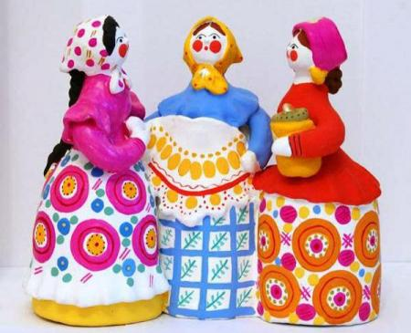
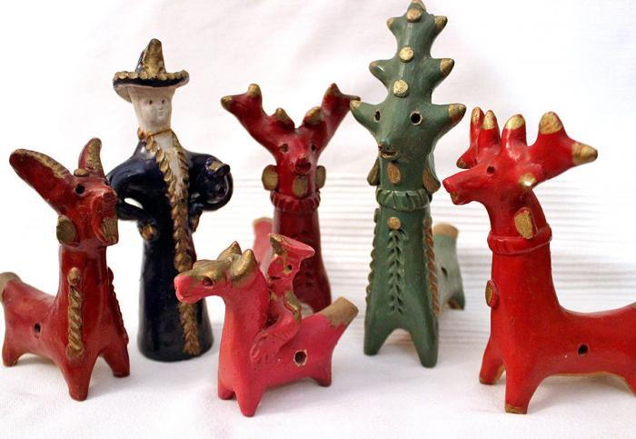

Kargopol toys
Kargopol toys are moulded painted clay figures of people and animals. It is one of the old Russian folk art handicrafts, which is produced in and around the town of Kargopol, Arkhangelsk Oblast, in the north of Russia.

Kargopol toys are moulded painted clay figures of people and animals. It is one of the old Russian folk art handicrafts, which is produced in and around the town of Kargopol, Arkhangelsk Oblast, in the north of Russia.
According to legend, the village of Filimonovo was named after a potter named Filimon, who was the first to discover deposits of soft clay in the area, which could be used to create various utensils and pottery.

The toy is named after the eponymous settlement of Dymkovo, which is located near the city of Kirov. Everyone is well acquainted with the colorful, lavishly decorated and painted figurines of ladies, goats, roosters with bright, lush tails, horses, piglets, bears, and squeaky ducks.
In the 19th to 20th centuries, the village of Abashevo was home to the finest potters, whose works were highly valued throughout Russia. Abashevo toys are satirical representations that often mocked dishonest city dwellers and other officials.
